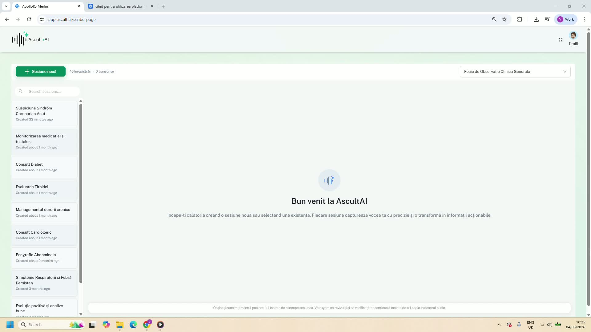
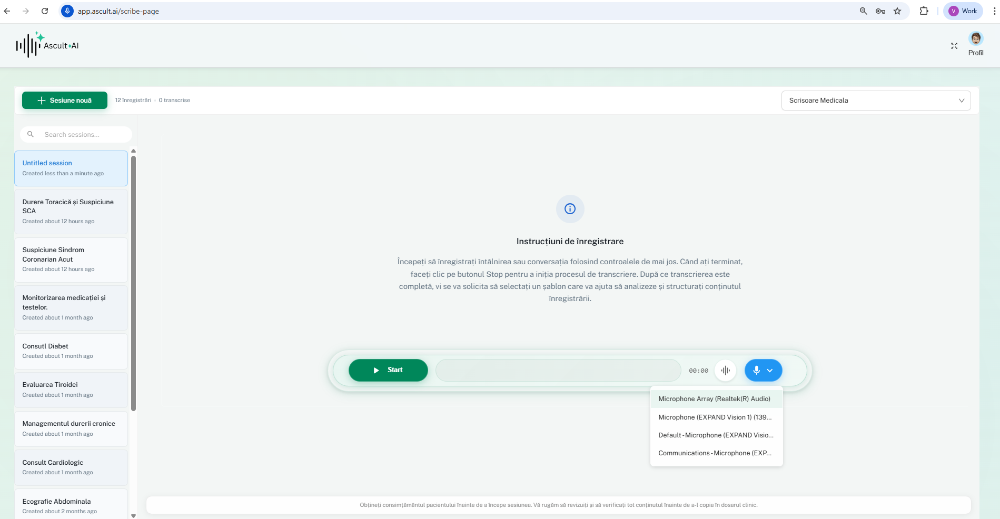
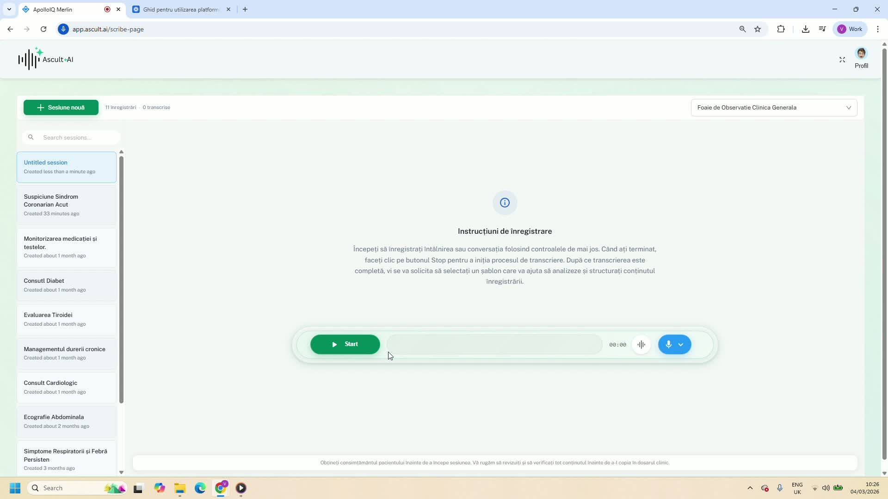
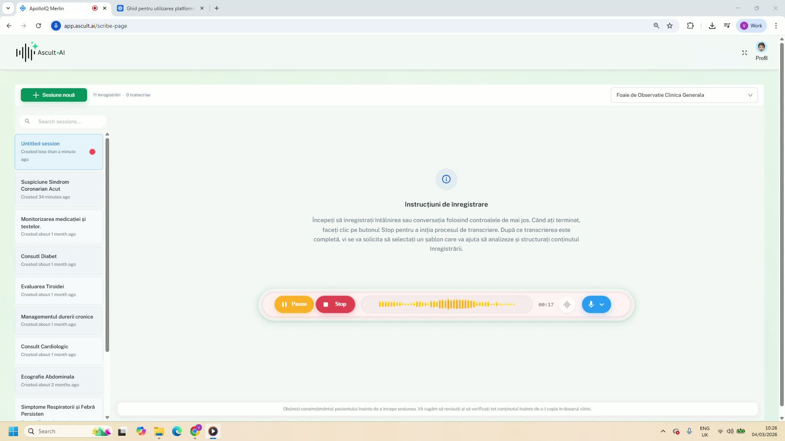
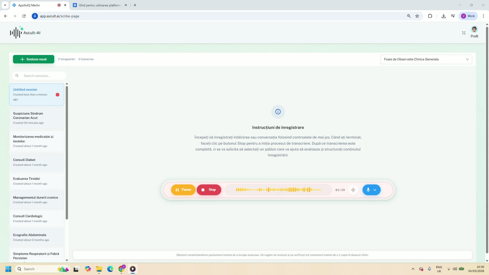
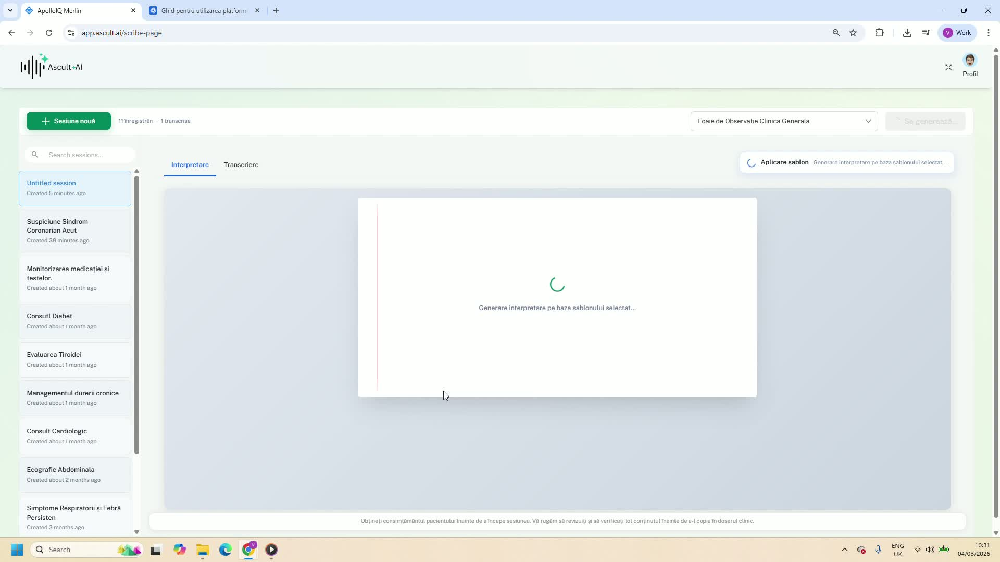
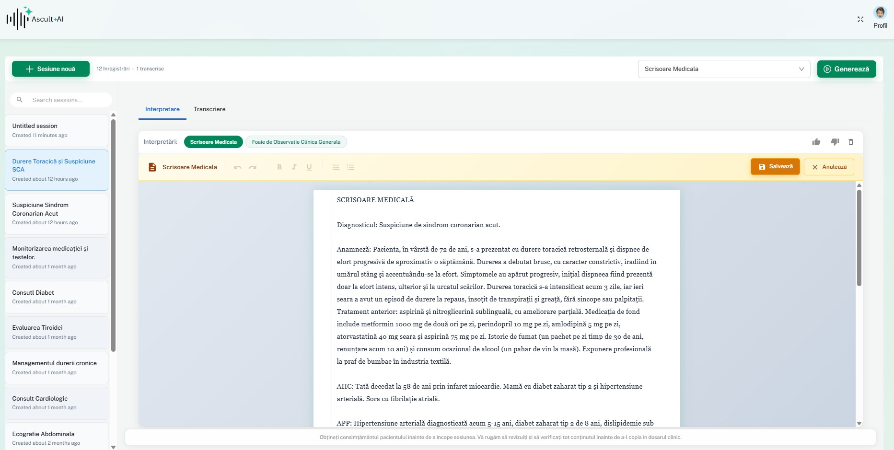
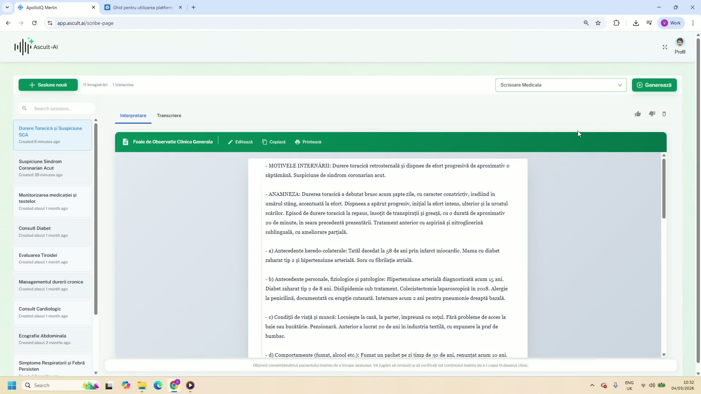

Ghid Pas cu Pas pentru Utilizarea AscultAI
Urmeaza acesti pasi simpli pentru a incepe sa folosesti AscultAI in consultatie.
1. Inceperea unei sesiuni

Pentru a incepe, urmeaza acesti pasi:
- Accesati platforma AscultAI — Navigati la app.ascult.ai si autentificati-va cu contul dedicat.
- Creati o sesiune noua sau selectati una existenta din lista de sesiuni.
- Alegeti sablonul potrivit — Din coltul din dreapta sus, selectati formatul de document dorit pentru consultatie (Foaie de Observatie Clinica Generala, Scrisoare Medicala, etc.).
2. Configurarea echipamentului

Inainte de a incepe inregistrarea, asigurati-va ca microfonul este configurat corect:
- Selectati microfonul — Apasati pe iconita de microfon din dreapta butonului Start si alegeti microfonul dorit din lista disponibila.
- Testati captarea audio — Verificati ca microfonul capteaza corect vocea la distanta dorita.
Permiterea accesului la microfon in browser
Cand accesati app.ascult.ai pentru prima data, browserul va va solicita permisiunea de a folosi microfonul. Este esential sa acordati aceasta permisiune pentru ca AscultAI sa poata inregistra consultatia.
- Acordati permisiunea — Cand apare fereastra pop-up din browser cu mesajul “app.ascult.ai wants to use your microphone”, apasati Allow (Permite).
- Daca ati blocat accidental microfonul — Apasati pe iconita de lacat (sau iconita de informatii) din bara de adrese a browserului, langa app.ascult.ai, si schimbati setarea pentru Microfon la Allow (Permite).
- Reincarcati pagina — Dupa modificarea permisiunii, apasati F5 sau butonul de reincarcare pentru ca schimbarea sa aiba efect.
3. Obtinerea consimtamantului pacientului

Inainte de a incepe inregistrarea, informati pacientul despre utilizarea AscultAI si obtineti acordul verbal.
- Incepeti inregistrarea conversatiei dand click pe butonul Start.
4. Colectarea informatiilor pacientului

Inregistrati conversatia cu pacientul asa cum faceti in mod normal. AscultAI va capta si structura automat informatiile relevante:
- Motivele prezentarii
- Istoricul medical relevant (antecedente personale si familiale)
- Starea generala a pacientului
- Semne vitale (tensiune arteriala, puls, saturatie de oxigen)
- Examinarea sistemelor (respirator, cardiovascular, digestiv etc.)
- Diagnostic si plan de tratament
5. Finalizarea conversatiei

Dupa terminarea consultatiei:
- Dati click pe butonul Stop pentru a opri inregistrarea.
Conversatia va fi trimisa automat catre sistemul de procesare AscultAI.
6. Procesarea conversatiei

Dupa oprirea inregistrarii:
- Conversatia va fi procesata automat de catre AscultAI.
- Se va genera un transcript al conversatiei, structurat conform sablonului ales.
Procesarea dureaza de obicei doar cateva secunde, in functie de durata consultatiei.
7. Revizuirea si editarea transcrierii

- Verificati interpretarea — Cititi documentul generat si asigurati-va ca informatiile sunt corecte.
- Editati daca este necesar — Faceti modificari direct in editor inainte de a salva sau printa.
8. Salvarea si imprimarea

Dupa revizuire, aveti mai multe optiuni:
- Salvati informatiile in sistemul clinic — Copiati nota si lipiti-o direct in portalul de management pacienti.
- Printati direct la imprimanta cabinetului pentru a adauga documentul la fisa pacientului.
9. Beneficiile utilizarii AscultAI
Prin utilizarea AscultAI in practica zilnica:
- Acordati atentie pacientului — Eliminati bariera ecranului si concentrati-va pe conversatie.
- Economisiti timp si reduceti birocratia — Recastigati pana la 2 ore pe zi din timpul de documentare.
Ai nevoie de ajutor?
Daca intampinati dificultati sau aveti intrebari, echipa noastra de suport este disponibila:
- Email: suport@ascult.ai
- Pagina de Intrebari Frecvente
Optimizarea Acuratetii
Sfaturi pentru cele mai precise transcrieri si note clinice.
Introducere in acuratete
Acuratetea transcrierii medicale este fundamentul pe care se construieste intreaga documentatie clinica generata de AscultAI. O transcriere precisa asigura faptul ca nota clinica finala reflecta fidel dialogul dintre medic si pacient, reducand riscul de erori medicale si imbunatatind calitatea actului medical. In mediul clinic romanesc, unde consultatiile implica frecvent terminologie latina, acronime specifice si alternarea intre limbajul medical si cel colocvial al pacientului, provocarile de acuratete sunt deosebit de complexe.
AscultAI utilizeaza modele de inteligenta artificiala antrenate special pe limbajul medical romanesc, capabile sa recunoasca peste 50.000 de termeni medicali, denumiri comerciale de medicamente disponibile in Romania. Rata medie de acuratete a sistemului depaseste 96% in conditii optime, dar poate fi influentata semnificativ de factori externi pe care dumneavoastra ii puteti controla.
Factori care influenteaza acuratetea
Intelegerea factorilor care afecteaza calitatea transcrierii este primul pas pentru optimizarea rezultatelor. Acestia pot fi grupati in trei categorii principale:
- Factori audio – calitatea microfonului, distanta fata de vorbitor, zgomotul de fundal, reverberatia incaperii si interferentele electronice.
- Factori lingvistici – claritatea vorbirii, ritmul dictarii, utilizarea corecta a termenilor medicali, pronuntia denumirilor de medicamente si structurarea logica a informatiilor.
De ce conteaza fiecare procent
Diferenta dintre o acuratete de 94% si una de 98% poate parea nesemnificativa, dar intr-o consultatie tipica de 15 minute care genereaza aproximativ 2.000 de cuvinte, aceasta inseamna diferenta dintre 120 de cuvinte potential incorecte si doar 40. Intr-un context medical, chiar si o singura eroare la nivelul dozajului unui medicament sau al unui diagnostic poate avea consecinte majore.
Pozitionarea microfonului
Calitatea semnalului audio capturat de microfon este cel mai important factor tehnic care influenteaza acuratetea transcrierii. Un microfon pozitionat corect poate face diferenta intre o transcriere excelenta si una plina de erori. Indiferent daca utilizati microfonul integrat al laptopului, un microfon extern USB sau o casca cu microfon, pozitionarea corecta este esentiala.
Regula generala este simpla: cu cat microfonul este mai aproape de sursa vocii si mai departe de sursele de zgomot, cu atat rezultatul va fi mai bun. Totusi, exista nuante importante in functie de tipul consultatiei si de configuratia cabinetului.
Consultatii la birou
Pentru consultatiile standard, in care medicul si pacientul se afla fata in fata la birou, pozitionarea optima a microfonului depinde de tipul dispozitivului:
- Microfon extern USB de birou – Asezati-l la 30-50 cm distanta de dumneavoastra, pe birou, orientat spre zona centrala dintre medic si pacient. Microfonul trebuie sa fie pe o suprafata stabila, preferabil pe un suport anti-vibratii sau pe un prosop pliat pentru a reduce vibratiile transmise prin masa.
- Microfon lavaliera (de tip clips) – Fixati-l pe rever, la aproximativ 15-20 cm de gura. Aceasta este optiunea ideala pentru captarea clara a vocii medicului, mai ales in cabinete zgomotoase.
- Laptopul pe birou – Daca utilizati microfonul integrat al laptopului, asigurati-va ca laptopul este deschis la un unghi de 90-120 de grade si ca nu exista obstacole intre microfon si vorbitor. Distanta ideala este de 40-60 cm.
Vizite la domiciliu
La vizitele la domiciliu, controlul mediului acustic este limitat. In aceste situatii, recomandam utilizarea unui microfon lavaliera conectat la telefonul mobil sau la tableta. Pozitionati dispozitivul de inregistrare pe o suprafata stabila, nu pe genunchi sau pe patul pacientului, unde miscarile pot genera zgomot de impact.
Captarea ambilor vorbitori
AscultAI diferentiaza automat vocile medicului si pacientului. Pentru o separare optima a vorbitorilor, este ideal ca microfonul sa fie pozitionat echidistant fata de ambii participanti sau sa utilizati un microfon omnidirectional. Daca un vorbitor este semnificativ mai departe de microfon decat celalalt, vocea acestuia va fi captata la un nivel mai scazut, ceea ce poate reduce acuratetea transcrierii pentru acel vorbitor.
Mediul ideal de inregistrare
Mediul acustic al cabinetului medical joaca un rol critic in calitatea inregistrarii audio si, implicit, in acuratetea transcrierii. Zgomotul de fundal, reverberatia si interferentele sunt inamicii principali ai unei transcrieri precise. Din fericire, majoritatea acestor probleme pot fi atenuate cu ajustari simple si accesibile.
Studiile noastre interne arata ca optimizarea mediului acustic poate imbunatati acuratetea transcrierii cu 3-7%, o diferenta semnificativa care se traduce in economii reale de timp la revizuirea notelor clinice.
Reducerea zgomotului de fundal
Zgomotul de fundal este cel mai frecvent factor care afecteaza negativ transcrierea. Iata sursele comune de zgomot si solutiile recomandate:
- Aparatura de climatizare – Aerul conditionat si ventilatoarele genereaza un zgomot constant de frecventa joasa. Daca este posibil, opriti unitatea in timpul consultatiei sau reduceti viteza la minimum. Alternativ, pozitionati microfonul cat mai departe de unitatea de AC.
- Zgomotul din sala de asteptare – Conversatiile, televizorul sau muzica din holul clinicii pot patrunde prin usa. Asigurati-va ca usa cabinetului este complet inchisa. O garnitura de etansare pe cadrul usii reduce semnificativ zgomotul transmis.
- Echipamentul medical – Aparatele de monitorizare, nebulizatoarele sau sterilizatoarele pot genera zgomote periodice. Programati utilizarea acestor echipamente in afara perioadelor de inregistrare, cand este posibil.
- Notificarile telefonului – Sunetele de notificare si vibratiile telefonului pe birou pot interfera cu inregistrarea. Activati modul silentios pe telefon in timpul consultatiilor.
Imbunatatiri acustice pentru cabinet
Reverberatia (ecoul) in camerele cu pereti netezi si podele dure poate face vorbirea mai putin inteligibila pentru algoritmul de transcriere. Cateva masuri simple pot imbunatati semnificativ acustica:
- Adaugati un covor sau un prelunitor de covor in zona de consultatie – aceasta reduce reverberatia de la podea.
- Perdelele groase la ferestre absorb undele sonore si reduc ecoul.
- Biblioteca cu carti pe unul dintre pereti serveste ca un difuzor acustic natural excelent.
- Panourile acustice decorative, disponibile in multiple culori si forme, pot fi integrate estetic in designul cabinetului.
Situatii de evitat
Exista anumite scenarii care compromit sever acuratetea transcrierii si care ar trebui evitate complet:
- Inregistrarea in spatii deschise cu mai multe conversatii simultane (de exemplu, camere de garda aglomerate).
- Plasarea microfonului langa fereastra deschisa spre o strada cu trafic intens.
- Utilizarea dispozitivului pe hol sau in zone de tranzit.
- Inregistrarea in timpul unor proceduri medicale zgomotoase (aspirator chirurgical, aparat de electrochirurgie).
Terminologia medicala
AscultAI a fost dezvoltat cu un vocabular medical extins, adaptat specificului practicii medicale din Romania. Motorul de recunoastere vocala este antrenat pe corpusuri de text medical romanesc si poate recunoaste cu precizie terminologia medicala latina, denumirile comerciale ale medicamentelor disponibile pe piata romaneasca si codurile de clasificare utilizate in sistemul de sanatate din Romania.
Cu toate acestea, vocabularul medical evolueaza constant – apar medicamente noi, se actualizeaza ghidurile terapeutice si fiecare specialitate are particularitatile sale terminologice. Intelegerea modului in care AscultAI proceseaza terminologia medicala va va ajuta sa obtineti transcrieri mai precise.
Cum proceseaza AscultAI termenii medicali
Sistemul utilizeaza un model lingvistic specializat care combina recunoasterea acustica cu contextul medical. Acest lucru inseamna ca, atunci cand pronuntati un cuvant ambiguu, algoritmul ia in considerare cuvintele din jur pentru a alege interpretarea corecta. De exemplu:
- „ser fiziologic” va fi recunoscut corect in context medical, si nu confundat cu alte interpretari ale cuvantului „ser”.
- „Metformin 850 mg” – sistemul recunoaste contextul dozajului si formateaza automat mg, g, ml si alte unitati de masura.
Abrevierile si acronimele
Abrevierile medicale sunt recunoscute automat de AscultAI. Puteti dicta abrevierile in mod natural, iar sistemul le va transcrie in forma corecta:
- TA – tensiune arteriala, recunoscuta cand este urmata de valori numerice (de exemplu, „TA 130 peste 85”).
- AV – alura ventriculara, recunoscuta in context cardiovascular.
- EKG / ECG – electrocardiograma, recunoscuta in ambele forme de pronuntie.
- VSH, TGO, TGP, HLG – abrevierile de laborator sunt recunoscute automat in contextul analizelor medicale.
Denumirile medicamentelor
Baza de date AscultAI contine peste 8.000 de denumiri comerciale si substante active disponibile in Romania, actualizata conform Nomenclatorului ANMDMR (Agentia Nationala a Medicamentului si Dispozitivelor Medicale din Romania). Pentru rezultate optime:
- Pronuntati denumirile de medicamente clar, cu pauza inainte si dupa denumire.
- Specificati forma farmaceutica (comprimate, capsule, solutie injectabila) – acest context ajuta la recunoasterea corecta.
- Pentru medicamente cu denumiri similare (de exemplu, Losartan vs. Lisinopril), enuntati clar fiecare silaba.
Folosirea template-urilor
Template-urile (sabloanele) sunt unul dintre cele mai puternice instrumente pentru imbunatatirea acuratetii in AscultAI. Un template nu este doar o structura vizuala pentru nota clinica – el ghideaza activ algoritmul de inteligenta artificiala, oferindu-i contextul necesar pentru a interpreta corect informatiile din consultatie si pentru a le organiza in sectiunile relevante.
Atunci cand selectati un template potrivit tipului de consultatie, AscultAI stie la ce tip de informatii sa se astepte. De exemplu, un template de consultatie cardiologica va acorda prioritate recunoasterii termenilor cardiovasculari, a valorilor tensionale si a frecventei cardiace, in timp ce un template de dermatologie va fi optimizat pentru descrierea leziunilor si a localizarilor anatomice.
Cum imbunatatesc template-urile acuratetea
Mecanismul prin care template-urile cresc precizia transcrierii functioneaza pe mai multe niveluri:
- Context specializat – Fiecare template activeaza un vocabular preferential specific specialitatii. Termenii medicali relevanti primesc un scor de probabilitate mai mare, reducand confuziile de transcriere.
- Structura predictibila – Cand algoritmul stie ca urmeaza sectiunea de „Examen obiectiv”, se asteapta la termeni descriptivi si valori numerice, nu la informatii anamnestice.
- Separarea informatiilor – Template-ul ghideaza clasificarea automata a informatiilor dictate in sectiunile corecte (motive de prezentare, istoric, examen clinic, diagnostic, plan terapeutic).
- Formatare automata – Valorile, dozele si parametrii sunt formatate automat conform conventiilor sectiunii respective.
Alegerea template-ului potrivit
AscultAI ofera template-uri predefinite pentru cele mai frecvente tipuri de consultatii. Alegerea corecta a template-ului este esentiala:
- Consultatie de specialitate – Selectati template-ul corespunzator specialitatii dumneavoastra (cardiologie, pneumologie, gastroenterologie etc.). Acestea contin sectiuni specifice si vocabular optimizat.
- Consultatie de medicina de familie – Utilizati template-ul general de medicina de familie, care este conceput pentru o paleta larga de patologii si este mai flexibil.
- Control periodic – Template-ul de control este simplificat si se concentreaza pe evolutia fata de consultatia anterioara.
- Urgenta – Template-ul de urgenta pune accent pe triaj, semne vitale si conduita terapeutica imediata.
Crearea de template-uri personalizate
Daca nici un template predefinit nu corespunde nevoilor dumneavoastra, puteti crea unul personalizat. Accesati sectiunea „Template-uri” din tabloul de bord si apasati „Creaza template nou”. Definiti sectiunile dorite, ordinea lor si cuvintele cheie asociate fiecarei sectiuni. Template-urile personalizate pot fi partajate cu colegii din aceeasi clinica.
La crearea unui template personalizat, includeti instructiuni clare pentru fiecare sectiune – de exemplu, „Aceasta sectiune contine semnele vitale: TA, puls, temperatura, saturatie O2, greutate”. Aceste instructiuni nu vor aparea in nota finala, dar vor ghida algoritmul in clasificarea corecta a informatiilor.
Tehnici de vorbire clara
Modul in care vorbiti in timpul consultatiei influenteaza direct calitatea transcrierii. Nu este necesar sa va modificati stilul natural de comunicare cu pacientul, dar cateva ajustari subtile pot face o diferenta semnificativa in acuratetea recunoasterii vocale. Aceste tehnici devin rapide reflexe dupa doar cateva zile de practica.
Este important de subliniat ca AscultAI este proiectat sa functioneze cu vorbirea naturala – nu trebuie sa dictati ca un robot sau sa vorbiti anormal de incet. Scopul este sa evitati cateva capcane comune care pot crea dificultati oricarui sistem de recunoastere vocala.
Ritmul si pauzele
Ritmul vorbirii este un factor crucial. Iata recomandarile noastre:
- Ritm conversational normal – Vorbiti intr-un ritm natural, similar celui pe care l-ati folosi la telefon cu un coleg. Nu este nevoie sa vorbiti excesiv de incet.
- Pauze scurte la tranzitii – Cand treceti de la o sectiune la alta (de exemplu, de la anamneza la examen obiectiv), faceti o pauza de 1-2 secunde. Aceasta ajuta algoritmul sa identifice tranzitia.
- Evitati vorbirea precipitata – Momentele in care vorbiti foarte rapid (de exemplu, cand enumerati medicamente) sunt cele mai predispuse la erori. Incetiniti usor ritmul la enumerari.
Dictarea numerelor si dozelor
Valorile numerice – doze de medicamente, valori tensionale, rezultate de laborator – sunt informatii critice care trebuie transcrise cu precizie absoluta. Pentru acuratete maxima:
- Dictati cifrele individual pentru numere compuse: „unu doi cinci” in loc de „o suta douazeci si cinci” pentru valoarea tensionala de 125 mmHg.
- Specificati unitatea de masura imediat dupa valoare: „Metformin, opt sute cincizeci de miligrame”.
- Pentru valori tensionale, folositi formula: „tensiunea arteriala, unu trei zero pe opt cinci”.
- Pentru valori cu zecimale, spuneti explicit „virgula”: „creatinina, unu virgula doi miligrame pe decilitru”.
Gestionarea intreruperilor pacientului
In consultatia reala, pacientii vorbesc adesea in acelasi timp cu medicul. AscultAI poate gestiona suprapunerile de voce in mare parte, dar acuratetea scade in aceste momente. Strategii utile:
- Lasati pacientul sa termine de vorbit inainte de a rezuma informatiile importante.
- Repetati scurt informatiile cheie spuse de pacient – „Deci durerea a inceput acum trei zile” – aceasta serveste si ca confirmare pentru pacient si asigura transcrierea corecta.
- Daca trebuie sa dictati o informatie importanta in timp ce pacientul vorbeste, asteptati o pauza naturala.
Corectarea si feedback-ul
Nicio transcriere automata nu este perfecta in 100% din cazuri. AscultAI ofera un sistem intuitiv de corectare care va permite sa identificati si sa remediati rapid eventualele erori. Mai important, fiecare corectare pe care o faceti contribuie activ la imbunatatirea sistemului, deoarece feedback-ul dumneavoastra este utilizat pentru a rafina modelul de recunoastere vocala pentru profilul dumneavoastra specific.
Procesul de corectare in AscultAI a fost proiectat pentru a fi rapid si intuitiv. In medie, revizuirea si corectarea unei consultatii de 15 minute necesita intre 1 si 3 minute – considerabil mai putin decat redactarea manuala a aceleiasi note clinice.
Tipuri de erori si cum sa le corectati
Erorile de transcriere se incadreaza in cateva categorii principale, fiecare cu metoda de correctie optima:
- Erori de recunoastere a cuvintelor – Cuvinte transcrise gresit din cauza pronuntiei neclare sau a zgomotului ambiental. Faceti clic pe cuvantul incorect, iar sistemul va afisa alternative sugerate. Selectati varianta corecta sau tastati manual cuvantul dorit.
- Erori de segmentare a vorbitorilor – Ocazional, o replica a medicului poate fi atribuita pacientului sau invers. Utilizati functia de „Schimbare vorbitor” facand clic pe pictograma de schimb de langa replica respectiva.
- Erori de formatare – Valori numerice formatate incorect (de exemplu, „1 virgula 5” in loc de „1,5”) sau abrevieri ne-recunoscute. Editati direct in text si marcati corectia.
- Informatii lipsa – Fragmente de vorbire care nu au fost captate, de obicei din cauza volumului scazut sau a suprapunerii vocilor. Adaugati manual informatia lipsa in sectiunea corespunzatoare.
Sistemul de feedback
AscultAI implementeaza un mecanism de invatare continua bazat pe corectiile dumneavoastra. Acest sistem functioneaza astfel:
- Corectare locala – Fiecare corectie este salvata si asociata cu semnatura acustica a segmentului respectiv.
- Adaptare la profilul vocal – Dupa aproximativ 20-30 de consultatii corectate, modelul dezvolta un profil de vorbire personalizat care recunoaste mai bine particularitatile vocii dumneavoastra.
- Imbunatatire a vocabularului – Termenii pe care ii corectati frecvent sunt adaugati automat la lista de prioritati pentru profilul dumneavoastra.
- Feedback agregat – Corectarile anonimizate contribuie la imbunatatirea modelului general, beneficiind toti utilizatorii.
Practici optime de corectare
Pentru a maximiza beneficiul corectiilor dumneavoastra si a accelera procesul de adaptare al sistemului, va recomandam:
- Corectati nota clinica imediat dupa consultatie, cat informatiile sunt proaspete in memorie.
- Utilizati functia de „Marcati ca gresit” chiar si pentru erori minore – fiecare marcare ajuta sistemul sa invete.
- Fiti consecventi in corectari – daca preferati „HTA” in loc de „hipertensiune arteriala”, corectati de fiecare data in acelasi mod.
- Verificati cu atentie valorile numerice, dozele de medicamente si diagnosticele – acestea sunt zonele critice.
Setari avansate
AscultAI ofera o serie de setari avansate care va permit sa personalizati in detaliu modul in care functioneaza transcrierea si generarea notelor clinice. Aceste setari sunt accesibile din meniul „Setari” al contului dumneavoastra si pot fi ajustate oricand. Desi valorile implicite sunt optimizate pentru majoritatea utilizatorilor, ajustarea fina a acestor parametri poate aduce imbunatatiri suplimentare pentru cazuri specifice.
Va recomandam sa modificati aceste setari treptat, una cate una, si sa evaluati impactul fiecarei modificari pe parcursul a cel putin 5-10 consultatii inainte de a face alte ajustari.
Setari de calitate audio
Calitatea captarii audio poate fi ajustata din sectiunea „Audio” a setarilor:
- Rata de esantionare – Implicit setata la 44.1 kHz, poate fi redusa la 16 kHz pentru dispozitive cu capacitate de procesare limitata. O rata de esantionare mai mare inseamna calitate audio superioara, dar si fisiere mai mari.
- Filtrarea zgomotului – Activata implicit, reduce zgomotul de fundal constant. Poate fi dezactivata daca observati ca si vorbirea este afectata (in cazuri rare, filtrul poate atenua si frecvente vocale).
- Detectarea automata a pauzelor – Controleaza cat timp de tacere trebuie sa treaca pentru ca sistemul sa considere ca o propozitie s-a incheiat. Valoarea implicita este de 1,5 secunde. Reduceti la 0,8 secunde pentru dictare rapida sau cresteti la 2,5 secunde daca faceti pauze lungi de gandire.
Preferinte lingvistice
Setarile de limba permit personalizarea modului in care AscultAI proceseaza textul:
- Limba principala – Romana (implicit). AscultAI suporta si dictarea mixta romana-engleza, utila pentru termeni medicali care nu au echivalent consacrat in romana.
- Stil de formatare medicala – Alegeti intre formatarea conform standardelor romanesti (virgula pentru zecimale, unitati SI) sau formatarea internationala.
- Abrevieri preferate – Configurati daca doriti ca termenii sa fie transcrisi integral (de exemplu, „hipertensiune arteriala”) sau abreviat („HTA”). Aceasta setare se aplica la nivelul notei finale, nu la nivelul transcrierii brute.
Vocabular specific specialitatii
Fiecare specialitate medicala are un vocabular specific care poate fi activat pentru a imbunatati recunoasterea. Din sectiunea „Specialitate”, puteti:
- Selecta specialitatea principala si pana la doua sub-specialitati.
- Activa pachete de vocabular suplimentare (de exemplu, „Chirurgie bariatrica” sau „Cardiologie interventionala”).
- Importa liste de termeni dintr-un fisier CSV – util pentru clinicile care au propriile protocoale si terminologie interna.
- Partaja vocabularul personalizat cu colegii din aceeasi organizatie.
Sensibilitatea microfonului
Ajustarea sensibilitatii microfonului poate rezolva probleme specifice de captare audio:
- Sensibilitate ridicata – Utila cand vorbitorul este la distanta mai mare de microfon sau vorbeste cu voce scazuta. Atentie: creste si nivelul zgomotului de fundal captat.
- Sensibilitate standard – Setarea recomandata pentru majoritatea situatiilor, optimizata pentru distante de 30-60 cm.
- Sensibilitate redusa – Potrivita pentru medii foarte zgomotoase, unde doriti sa captati doar vocea de aproape a medicului. Necesita ca microfonul sa fie la mai putin de 30 cm de vorbitor.
Setari de export si integrare
Parametrii de export influenteaza formatul final al notei clinice si pot fi ajustati pentru a se potrivi cu cerintele sistemului informatic al clinicii dumneavoastra:
- Formatul de export: PDF, DOCX, HL7 FHIR sau text simplu.
- Semnatura digitala a medicului pe documentul exportat.
- Integrarea directa cu sistemele informatice medicale (HIS) compatibile.
Intrebari Frecvente
Raspunsuri la cele mai comune intrebari despre AscultAI.
1. Despre AscultAI
AscultAI este un instrument de productivitate bazat pe inteligenta artificiala care te ajuta sa documentezi mai rapid. Asculta conversatiile tale profesionale (consultatii, intalniri, sedinte), le transcrie automat si genereaza drafturi structurate pe care le poti revizui, edita si valida inainte de utilizare.
AscultAI este o aplicatie web (webapp) care functioneaza direct din browser, pe orice dispozitiv cu conexiune la internet. Nu este necesara instalarea niciunei aplicatii.
AscultAI este folosit de profesionisti care au nevoie sa documenteze conversatii: medici (de familie, specialisti, psihologi, stomatologi), avocati, consultanti si alti profesionisti din domenii unde documentatia precisa este esentiala.
Nu. AscultAI nu este un generator de continut creativ si nu este un chatbot. Este un sistem specializat, optimizat exclusiv pentru documentarea si structurarea informatiilor din conversatii profesionale.
Spre deosebire de asistentii AI generali, AscultAI intelege terminologia de specialitate, genereaza documente structurate conform sabloanelor tale si respecta standarde stricte de confidentialitate si securitate a datelor.
Nu. Aplicatiile de dictare clasice produc text brut care necesita editare masiva. AscultAI face un pas in plus: dupa transcriere, analizeaza continutul si genereaza un draft structurat conform sablonului ales de tine — gata de revizuit si validat, fara rescriere manuala.
Rezolva „latenta administrativa” — timpul si efortul cognitiv consumate intre finalizarea unei conversatii (de exemplu, o consultatie) si finalizarea documentatiei aferente. In loc sa scrii sau sa dictezi manual dupa fiecare pacient, AscultAI genereaza un draft structurat in secunde. Tu revizuiesti, corectezi daca e nevoie, si validezi.
2. Cum functioneaza
Procesul este simplu si se desfasoara in patru pasi:
- Pasul 1 – Porneste: Deschizi AscultAI in browser si apesi „Inregistreaza”. AscultAI incepe sa asculte conversatia.
- Pasul 2 – Converseaza: Desfasoara-ti consultatia normal. AscultAI lucreaza in fundal, fara sa interfere.
- Pasul 3 – Revizuieste: La final, AscultAI genereaza un draft structurat pe baza conversatiei. Revizuiesti continutul, corectezi ce e necesar.
- Pasul 4 – Valideaza si exporta: Dupa ce confirmi ca documentul este corect, il poti copia, printa sau exporta in format PDF.
AscultAI foloseste modele avansate de recunoastere vocala (ASR) optimizate pentru terminologie profesionala romaneasca. Sistemul asculta conversatia, o transcrie, apoi analizeaza continutul pentru a genera un draft structurat conform sablonului ales. Transcrierea si structurarea se fac in timp aproape real.
Nu. AscultAI nu ofera diagnostice, nu propune tratamente si nu substituie judecata profesionala a utilizatorului. Rolul sau este strict de suport pentru documentare: asculta, transcrie si structureaza. Decizia clinica sau profesionala iti apartine in totalitate.
Da. Sistemul este proiectat sa functioneze in conversatii intre doua sau mai multe persoane. Totusi, pentru rezultate optime, recomandam un mediu cu zgomot de fond minim si o distanta rezonabila fata de microfon.
- Foloseste un mediu cat mai linistit (fara muzica, televizor sau conversatii suprapuse).
- Aseaza dispozitivul la o distanta rezonabila — nu in buzunar sau sub documente.
- Vorbeste natural, cu un ritm normal. Nu e nevoie sa dictezi.
- Daca folosesti telefonul, activeaza microfonul integrat sau foloseste casti cu microfon.
3. Securitate si confidentialitate
Da. Securitatea datelor este centrala in arhitectura AscultAI. Toate datele sunt criptate atat in tranzit (TLS 1.2+) cat si la stocare (AES-256), si sunt procesate exclusiv in centre de date din Uniunea Europeana (Microsoft Azure, regiunea North Europe — Irlanda). Datele nu parasesc niciodata Spatiul Economic European (SEE).
In mod implicit, nu. Aplicam principiul „stocare zero” (zero-retention): datele audio sunt procesate in timp real pentru generarea draftului, apoi sterse automat. Nu pastram inregistrari audio dupa finalizarea procesului.
La cererea explicita a clinicii, putem activa stocarea inregistrarilor ca serviciu aditional (contra cost), cu respectarea termenilor din Acordul de Prelucrare a Datelor (DPA).
Doar tu si persoanele carora le acorzi explicit acces. Echipa AscultAI nu are acces la continutul documentelor tale. Accesul este securizat prin protocoale de autentificare si criptare. Poti sterge orice document din sistem in orice moment.
Toate datele sunt stocate si procesate exclusiv in Uniunea Europeana (Microsoft Azure, regiunea North Europe — Irlanda), in conformitate deplina cu GDPR. Nu transferam date in afara SEE.
Nu. Datele tale nu sunt niciodata folosite pentru antrenarea, reantrenarea sau imbunatatirea modelelor de inteligenta artificiala. Acest lucru este garantat contractual prin Termenii de Utilizare si Acordul de Prelucrare a Datelor (DPA).
4. Consimtamantul pacientului
Da. Legislatia romaneasca (inclusiv Legea 46/2003 — Drepturile pacientului si Art. 226 Cod Penal) impune informarea si obtinerea consimtamantului persoanei inainte de inregistrarea conversatiei. Pacientul trebuie sa stie:
- Ca conversatia va fi inregistrata (audio captat de microfon);
- De ce se face inregistrarea (pentru generarea automata a documentatiei);
- Cine proceseaza datele si unde sunt stocate;
- Ca poate refuza fara nicio consecinta asupra calitatii serviciului medical primit.
Exista doua variante:
- Consimtamant scris: Pacientul semneaza un formular dedicat. Oferim un model de formular pe care il poti personaliza.
- Consimtamant verbal documentat: Acceptabil daca este consemnat in fisa pacientului. Recomandam formularea: „Va informez ca voi folosi un asistent digital care transcrie conversatia pentru a genera documentatia. Sunteti de acord?”
Consultatia se desfasoara normal, fara AscultAI. Refuzul nu afecteaza in niciun fel calitatea serviciului medical. Documentezi manual, ca de obicei.
5. Precizie, limite si validare umana
AscultAI atinge rate de acuratete ridicate pentru terminologia profesionala romaneasca in conditii optime de inregistrare. Performanta variaza in functie de: calitatea microfonului, nivelul de zgomot ambient, claritatea vorbirii si complexitatea terminologiei folosite.
Da. Ca orice tehnologie bazata pe procesare de limbaj natural, pot aparea:
- Erori de transcriere (ASR): cuvinte similare fonetic pot fi confundate;
- Erori de interpretare contextuala: AI-ul poate structura o informatie intr-o sectiune gresita a sablonului;
- Omisiuni: unele detalii mentionate in conversatie pot lipsi din draftul generat;
- Halucinatii AI: in cazuri rare, AI-ul poate genera informatii care nu au fost mentionate explicit in conversatie.
AscultAI opereaza pe principiul „Human-in-the-loop”: AI-ul este un instrument de suport, nu un autor. Fiecare document generat are caracter de draft orientativ. Tu, ca profesionist, ai obligatia legala si profesionala de a:
- Citi integral draftul generat;
- Corecta orice eroare identificata;
- Valida documentul inainte de a-l printa, exporta sau include in dosarul pacientului.
Draftul generat poate contine erori. Daca un document cu erori ajunge in dosarul pacientului fara validare, responsabilitatea profesionala si legala iti revine. AscultAI iti economiseste timpul de redactare, nu iti transfera responsabilitatea de verificare.
6. Functionalitati si personalizari
Da. AscultAI ofera sabloane complet personalizabile. Poti crea sabloane proprii sau adapta cele existente pentru a se potrivi stilului tau de documentare si cerintelor specifice ale practicii tale. Oferim sabloane prestabilite pentru specialitati frecvente (medicina de familie, psihologie, dermatologie, stomatologie si altele).
- Copiate — cu un click, copii continutul si il lipezi in orice sistem (EHR, Word, email);
- Exportate in PDF — format profesional, personalizabil cu logo-ul si datele clinicii tale;
- Printate direct — foaia printata include antetul si datele clinicii.
La cerere, putem explora posibilitatea de integrare cu sistemul tau de evidenta electronica. Totusi, cea mai mare parte din timpul economisit provine din generarea automata a drafturilor — indiferent de integrare, poti copia documentele direct in EHR-ul tau in cateva secunde.
AscultAI este optimizat pentru limba romana, inclusiv terminologia medicala specifica. Sistemul poate procesa si conversatii in alte limbi (engleza, franceza s.a.), dar performanta optima este pentru romana.
Da. AscultAI functioneaza atat pentru consultatii fata in fata, cat si pentru consultatii video sau telefonice. In cazul teleconsultatiilor, deschizi AscultAI pe acelasi dispozitiv de pe care desfasori consultatia.
Da. Poti sterge orice document generat in orice moment. De asemenea, in conformitate cu GDPR, poti solicita stergerea integrala a tuturor datelor tale asociate contului.
7. Cerinte tehnice si compatibilitate
AscultAI este o aplicatie web care functioneaza in orice browser modern — Chrome, Firefox, Safari sau Edge. Poti accesa platforma de pe computer, laptop, tableta sau telefon.
Nu. AscultAI functioneaza integral din browser. Nu este necesara instalarea niciunei aplicatii, extensii sau software suplimentar.
O conexiune stabila la internet este necesara pe durata inregistrarii. Recomandam minim 2 Mbps upload pentru o transcriere fluenta. Conexiunea Wi-Fi din cabinet este de obicei suficienta.
Microfonul integrat al laptopului sau telefonului functioneaza bine in cele mai multe situatii. Pentru cabinete cu zgomot de fond sau conversatii la distanta, recomandam un microfon extern de birou sau casti cu microfon.
8. Onboarding si primii pasi
- Pasul 1: Discutie initiala si evaluarea nevoilor — intelegem volumul si specificul activitatii tale.
- Pasul 2: Configurarea contului si sabloanelor — adaptam platforma la specialitatea si preferintele tale.
- Pasul 3: Sesiune de training (15–20 minute) — iti aratam cum sa folosesti eficient platforma.
- Pasul 4: Utilizare si suport continuu — echipa noastra e disponibila pentru orice intrebare.
De la prima consultatie. Dupa sesiunea de training de 15–20 minute, poti folosi AscultAI imediat. Cele mai multe cabinete raporteaza o reducere semnificativa a timpului de documentare din prima zi de utilizare.
Datele raman ale tale. La incetarea colaborarii, poti exporta toate documentele generate, iar noi stergem datele tale conform prevederilor GDPR si ale Acordului de Prelucrare a Datelor.
9. Conformitate si reglementari
Da. AscultAI este conform cu Regulamentul General privind Protectia Datelor (GDPR — Reg. UE 2016/679) si cu Legea 190/2018 (legea romaneasca de punere in aplicare a GDPR).
Relatia juridica: cabinetul/clinica ta este Operatorul de date (data controller), iar ApolloIQ SRL este Procesatorul (data processor). Aceasta relatie este formalizata printr-un Acord de Prelucrare a Datelor (DPA) semnat la activarea contului.
Conform GDPR, ai dreptul de:
- Acces — sa stii ce date sunt procesate;
- Rectificare — sa corectezi date incorecte;
- Stergere — sa soliciti stergerea datelor („dreptul de a fi uitat”);
- Portabilitate — sa primesti datele intr-un format structurat;
- Opozitie — sa te opui prelucrarii in anumite conditii.
Ca operator de date cu caracter personal (data controller), ai urmatoarele obligatii:
- Sa obtii consimtamantul pacientului inainte de inregistrare;
- Sa informezi pacientul despre scopul si modalitatea de prelucrare;
- Sa validezi personal fiecare document inainte de utilizare;
- Sa pastrezi confidentialitatea datelor medicale conform legii.
Nu. AscultAI este un instrument de suport administrativ pentru documentare si productivitate profesionala. Nu este un dispozitiv medical in sensul Regulamentului (UE) 2017/745 si nu a fost proiectat, evaluat sau certificat ca atare.
AscultAI nu ofera diagnostice, nu propune tratamente, nu interpreteaza rezultate clinice si nu substituie in niciun fel judecata profesionala a utilizatorului.
Regulamentul UE privind Inteligenta Artificiala (Reg. 2024/1689 — AI Act) clasificia sistemele AI pe niveluri de risc. AscultAI respecta obligatiile de transparenta ale AI Act: te informam clar ca documentele sunt generate de AI si necesita validare umana.
10. Suport si contact
- Email: support@ascult.ai
- Chat in platforma: disponibil in interfata AscultAI
Contacteaza-ne prin oricare dintre canalele de mai sus. Echipa noastra de suport raspunde in timpul programului de lucru (L–V, 9:00–18:00). Pentru probleme urgente legate de pierderea accesului la date, raspundem in maxim 24 de ore.
Direct din interfata AscultAI, poti marca orice sectiune ca „eroare”. Feedback-ul tau ne ajuta sa imbunatatim continuu calitatea serviciului.
AscultAI este un instrument de suport pentru documentare, produs al ApolloIQ SRL. Documentele generate sunt drafturi orientative create cu ajutorul inteligentei artificiale si necesita verificarea si validarea de catre utilizator. AscultAI nu substituie judecata profesionala.
Ultima actualizare: Februarie 2026 • © 2026 ApolloIQ SRL
Explicatii si Materiale
Materiale printabile pentru pacienti, postere pentru clinici si resurse informative.
Pentru Pacienti
Materiale care explica pacientilor ce este AscultAI si cum sunt protejate datele lor.
Explicatie pentru Pacienti
Fisa printabila A4 care explica pacientilor ce este AscultAI, cum functioneaza si cum sunt protejate datele lor.
Descarca PDFFormate disponibile:
Formular Consimtamant
Formular optional de consimtamant GDPR pentru pacienti. Editabil in Word sau PDF.
Descarca PachetFormate disponibile:
Pentru Clinici
Postere si materiale pentru sala de asteptare, receptie si ecrane TV.
Poster Sala de Asteptare
Poster A4 sau A3 pentru afisare in sala de asteptare. Design profesional care inspira incredere.
Descarca PDFDisplay TV
Imagine 16:9 (1920x1080) pentru ecranele TV din sala de asteptare sau receptie.
Descarca PNG{kind=link}
Pentru Medici
Materiale informative despre functionalitati si beneficii pentru profesionistii medicali.
Nu gasesti ce cauti?
Echipa noastra de suport este pregatita sa te ajute cu orice intrebare.
Contacteaza-ne